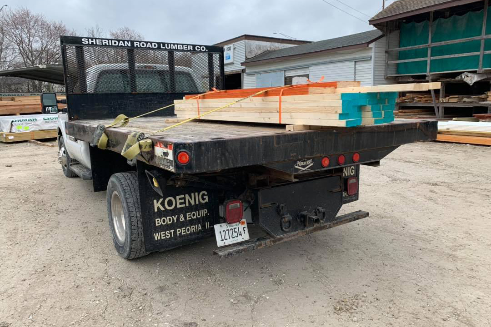

Delivery
Sheridan Lumber delivers to all of Peoria, IL and the surrounding area. We'll deliver materials for your new Home, Deck, Addition, Windows, or Doors. Our drivers love to help and will carry or drop off the materials next to the work area. Sheridan Lumber believes in fair delivery prices. Call us for an estimate.

Wood Shop
Sheridan Lumber's wood shop can with you next project. We provide the following services:
- custom wood work
- sheeting ripping
- pre cutting
- routing
- custom crates
Door Shop
Sheridan Lumber can modify, customize, and build doors for your next project. As a house ages door ways tend to shift. This can cause a door to bind on the jams or drag on the floor. We can take a look at issues like this and make professional adjustments.
Screen Repair
Sheridan Lumber provides on site and in store screen repairs. Just drop off small window screens and sliding door screens in store. For those large or hard to reach screens call us and we will send a knowledgeable repair man to fix you screen.